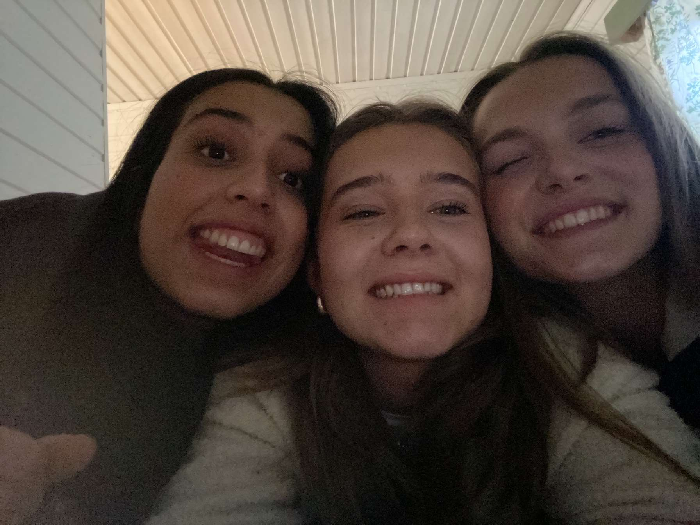
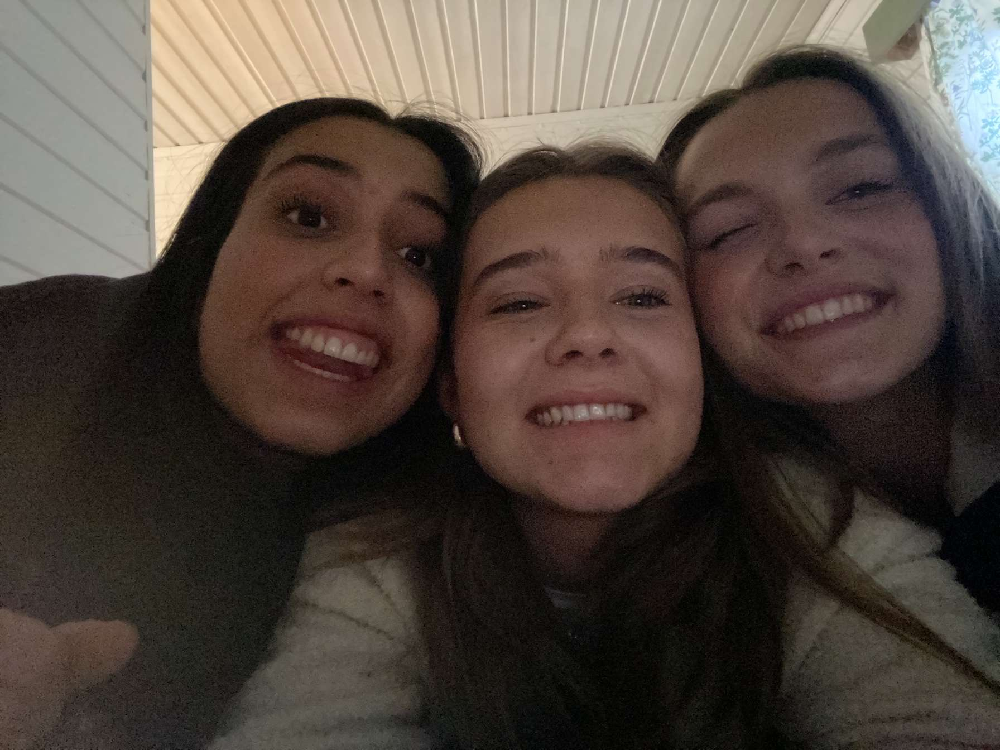

Dans
Dans er min største kjærlighet. Jeg har danset siden jeg var bare tre år gammel og jeg elsker det. Jazz, ballett, hiphop, samtid, moderne, commercial, tåspiss, house og heels, you name it, jeg har dansa det meste. Som amatør og proffesjonell, du har kanskje sett meg på scenen i Nadderudrevyen, på Folketeatheret eller i Bærum kulturhus. Jeg er snart relevant i KGB dans og balletts oppsetning av "Nøtteknekkeren", hvor jeg både har solist rolle og er en del av ensamblet.


Konserter
Jeg elsker å være på konserter. Den høye musikken, vibrasjonene i bakken og alle rundt deg som har kommet fordi de liker å høre på samme artist som deg. Til nå i år har jeg vært på to konserter, og jeg skal på to til før året er omme. Drømme artisten min å se live på en konsert er Bruno Mars.
Venner
her står det om venner
 
